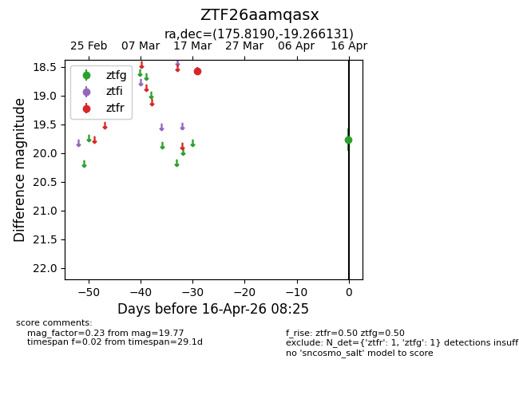
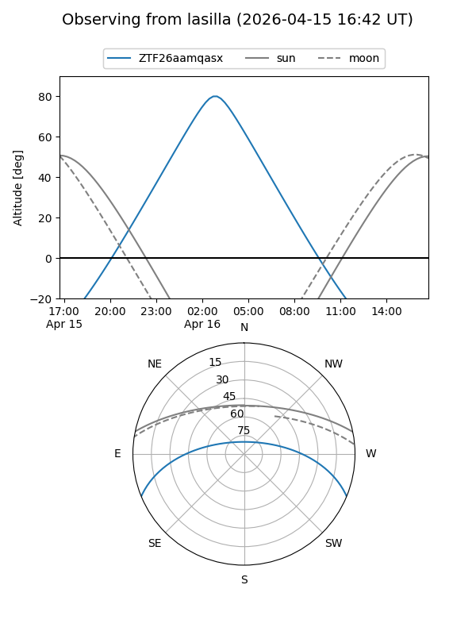
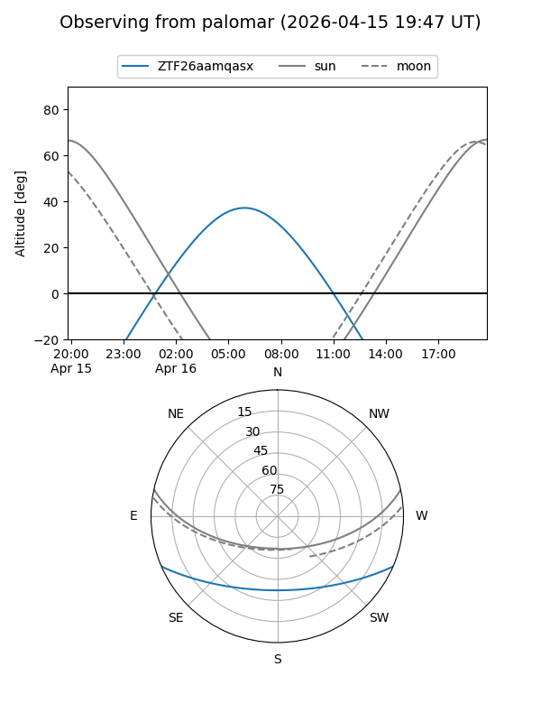

ZTF26aamqasx
Target ZTF26aamqasx at 2026-04-16 08:33
Aliases and brokers:
FINK: link
Lasair: link
ALeRCE: link
alt names
ZTF26aamqasx (ztf,fink_ztf)
Coordinates:
equatorial (ra, dec) = 175.8190,-19.26613
equatorial (HMS+DMS) = 11:43:16.57,-19:15:58.07
galactic (l, b) = (281.5131,+40.75354)
Flags:
Photometry:
last ztfg=19.77, ztfr=18.58
1 ztfg, 1 ztfr detections
Lightcurve

Visibility


Additional plots